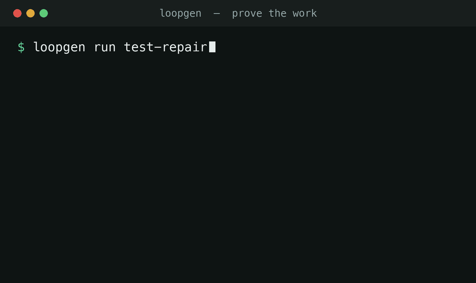

Verification & provenance gate for AI-generated code
Bring your own agent. loopgen does the part a stateless model can't.
It runs your real test / lint / build, gates on the exit codes, enforces forbidden-path and iteration limits, and records the run in a hash-chained ledger. Locally that's tamper-evident evidence; in CI it signs the entry against the Sigstore/Rekor transparency log — a verifiable, signed attestation you can gate merges on. Works with Claude Code, Codex, Cursor, and local models.

Run a loop, verify it, and leave proof it passed — or fail on a broken test / a forbidden secret.
Whoever writes the code, loopgen does what a stateless model can't: execute, verify, attest, and govern.
After you (or any agent — Claude Code, Cursor, Codex) make a bounded change, loopgen run diffs the working tree, runs your real verification commands, gates pass/fail on the exit codes, checks whether forbidden paths were touched, and writes a hash-chained audit. Locally that's tamper-evident evidence; in CI it's signed against the Sigstore/Rekor public transparency log — a verifiable attestation. Exits 0/1, so it drops straight into CI or a git hook.
# run + verify; in CI, sign a verifiable attestation
npx loopgen run test-repair
Driven mode goes from detection to prevention: loopgen drives a local model (Ollama / OpenAI-compatible) through a bounded loop and validates every proposed action before it lands — forbidden-path writes are blocked, non-allowlisted commands never run, and iterations/timeouts are hard-capped. Local-first: only your model is called; API keys by env-var name only.
npx loopgen run test-repair --mode driven \ --adapter ollama --ollama-model qwen2.5-coder
Every run appends to a per-repo, hash-chained ledger. loopgen audit rolls many devs'/repos' ledgers into a report + a self-contained HTML dashboard (no server), and audit check is a merge gate — blocking PRs that lack passing, untampered proof. There's a ready-made GitHub Action.
npx loopgen audit aggregate ./repos --html gov.html npx loopgen audit check --require test-repair --require-no-violations --require-chain